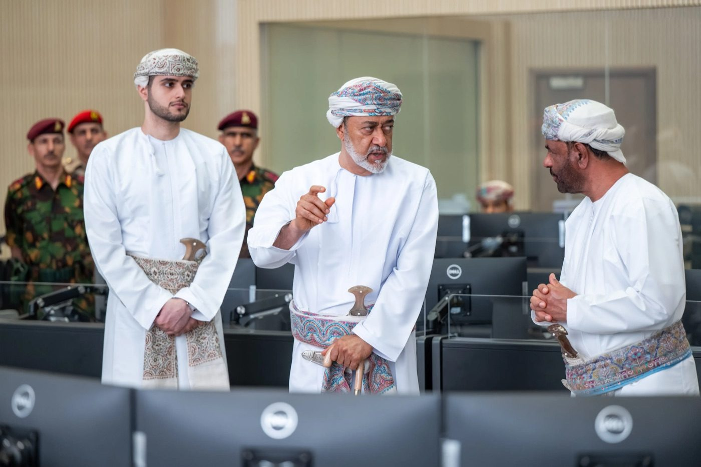
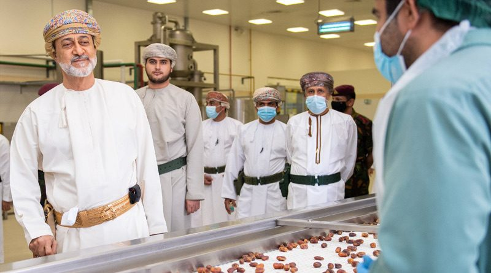


المؤسسات العُمانية
بتوجيهاتٍ ساميةٍ ورعايةٍ كريمة، تمضي مؤسسات عُمان في صناعة الإنجاز.
٠
مؤسسة
٠
حكومية
٠
عسكرية
٠
خاصة
٠
رياضية
 مؤسسة مميّزة
مؤسسة مميّزة
مؤسسة حكوميةوزارة الثقافة والرياضة والشبابترعى القطاعات الثقافية والرياضية والشبابية، وتحتفي بإنجازات أبناء عُمان.
تعرّف عليها
إنجازات المؤسسات العمانية
المؤسسات الحكومية١٠
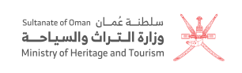
وزارة التراث والسياحةمؤسسة حكوميةالقطاع العسكري٦
 وزارة الدفاعمؤسسة عسكرية
الجيش السلطاني العُمانيمؤسسة عسكرية
سلاح الجو السلطاني العُمانيمؤسسة عسكرية
البحرية السلطانية العُمانيةمؤسسة عسكرية
الحرس السلطاني العُمانيمؤسسة عسكرية
شرطة عُمان السلطانيةمؤسسة عسكرية
وزارة الدفاعمؤسسة عسكرية
الجيش السلطاني العُمانيمؤسسة عسكرية
سلاح الجو السلطاني العُمانيمؤسسة عسكرية
البحرية السلطانية العُمانيةمؤسسة عسكرية
الحرس السلطاني العُمانيمؤسسة عسكرية
شرطة عُمان السلطانيةمؤسسة عسكرية
القطاع الخاص٢
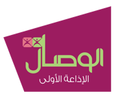
الوصالمؤسسة خاصة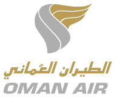
الطيران العمانيمؤسسة خاصةالجامعات والكليات٢٨
 جامعة السلطان قابوسجامعة حكومية
جامعة التقنية والعلوم التطبيقيةجامعة حكومية
جامعة صحارجامعة خاصة
جامعة السلطان قابوسجامعة حكومية
جامعة التقنية والعلوم التطبيقيةجامعة حكومية
جامعة صحارجامعة خاصة
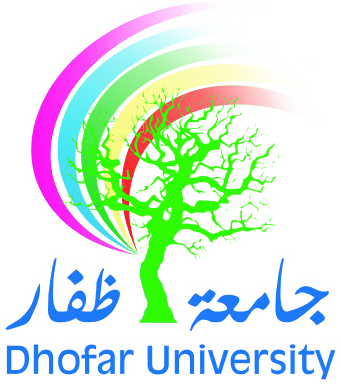
جامعة ظفارجامعة خاصة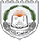
جامعة نزوىجامعة خاصةكل الجامعات والكليات٢٨ مؤسسة للتعليم العالي
المؤسسات الرياضية١٥
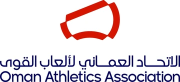
الاتحاد العُماني لألعاب القوىمؤسسة رياضية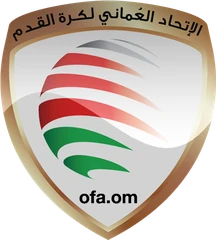
الاتحاد العُماني لكرة القدممؤسسة رياضية الاتحاد العُماني للهوكيمؤسسة رياضية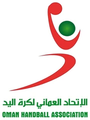
الاتحاد العُماني لكرة اليدمؤسسة رياضية الاتحاد العُماني لكرة السلةمؤسسة رياضية
الاتحاد العُماني لكرة السلةمؤسسة رياضية
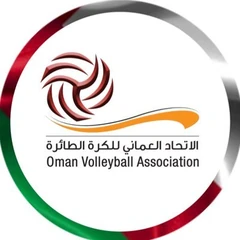
الاتحاد العُماني للكرة الطائرةمؤسسة رياضية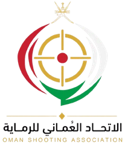
الاتحاد العُماني للرمايةمؤسسة رياضية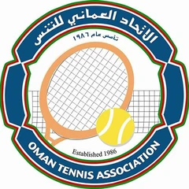
الاتحاد العُماني للتنس الأرضيمؤسسة رياضية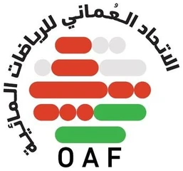
الاتحاد العُماني للسباحةمؤسسة رياضية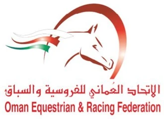
الاتحاد العُماني للفروسيةمؤسسة رياضية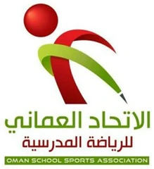
الاتحاد العُماني للرياضة المدرسيةمؤسسة رياضية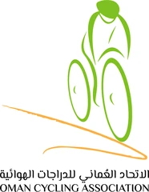
الاتحاد العُماني للدراجات الهوائيةمؤسسة رياضية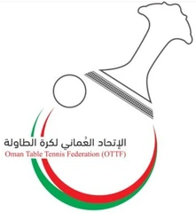
الاتحاد العُماني لكرة الطاولةمؤسسة رياضية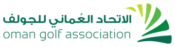
الاتحاد العُماني للجولفمؤسسة رياضية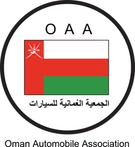
الجمعية العُمانية للسياراتمؤسسة رياضيةلا توجد مؤسسة بهذا الاسم